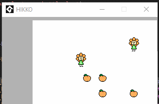
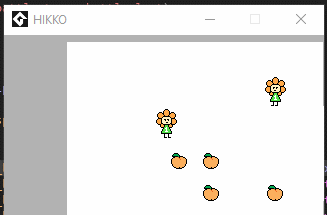

GitHub: https://github.com/brainfoam

It's been 31 years since the discovery of the Blue Omen, a prophetic and ancient sarcophagus that had descended down from the depths of space itself. Since that moment, decades have been spent researching for answers as to the nature of this mysterious object, but the only things to come of it thus far are more questions. What exactly is inside this coffin-shaped artifact? Is it something to be protected, or is the coffin protecting us? An oppressive aura emanates from Blue Omen, and some fear that a time may come where the object inside will render the earth into a state of eternal damnation.

Knuckle Sandwich is an RPG about a boy who moves out of home and starts looking for work in a new city. After landing a job at a run-down diner, he accidentally gets wrapped up in a missing persons mystery that involves a ludicrous gang and a fanatical cult.
Knuckle Sandwich is set in Bright City – a fictional metropolis on an even more fictional island in south-east Australia. Throughout the course of the game, you find yourself exploring the city, meeting all the inhabitants, and playing a role in their daily lives.

Incompatible Species is an episodically-split story detailing the exploits of a specialized (read: self-glorifying) pest control unit. Despite the mismatched nature of each member and the world around them, what keeps them all together runs deeper than the surface.
Human life has experienced a prosperous boom worldwide. Living conditions are above the minimum on a much broader scale, previously unsolved cures are cropping up one by one, and surgical repair is as simple as spraying yourself with a specialized powder.

"Hikko" is an experimental JRPG-styled game that's currently in the works. 2017 and 2018 have been rough years for me, and I wanted to formulate some kind of media to express the way that I've been feeling. I chose to start developing a small, abstract game that will hopefully help me collect my thoughts and come to terms with some issues I've been having - and maybe help others who are also suffering. The game is still in deep development, but a working engine is almost complete. I'm planning to have this game done by late-2019; maybe sooner or later depending on how my schedule changes.

"Your Earth" is a game I made for Ludum Dare's April 2017 game jam; it was made in under 48 hours over the course of a weekend. The game has no objective, it's just a silly little earth character that you can feed items to and watch it grow. If you want to download and play the game, feel free to visit the website and give it a try! This game was also featured on a GameJamCurator Ludum Dare episode!

"Bullet Rush" was a game I made in my sophomore year of college, as a final for my Web Design and Implementation course. The objective of the game is simple: you play as a small heart on the screen, and you have three lives. You move the mouse to traverse the heart around, and you keep dodging bullets for as long as you can. The game is made for browsers, so it can be tried out without any downloading! So far, it only works on desktops, and I have no plans to enable accessibility for mobile devices.
Blue Omen Operation
Website: https://www.kickstarter.com/
Role: Musician, SFX Artist, Play Tester
It's been 31 years since the discovery of the Blue Omen, a prophetic and ancient sarcophagus that had descended down from the depths of space itself. Since that moment, decades have been spent researching for answers as to the nature of this mysterious object, but the only things to come of it thus far are more questions. What exactly is inside this coffin-shaped artifact? Is it something to be protected, or is the coffin protecting us? An oppressive aura emanates from Blue Omen, and some fear that a time may come where the object inside will render the earth into a state of eternal damnation.
Knuckle Sandwich
Website: https://www.kickstarter.com/
Role: Musician
Knuckle Sandwich is an RPG about a boy who moves out of home and starts looking for work in a new city. After landing a job at a run-down diner, he accidentally gets wrapped up in a missing persons mystery that involves a ludicrous gang and a fanatical cult.
Knuckle Sandwich is set in Bright City – a fictional metropolis on an even more fictional island in south-east Australia. Throughout the course of the game, you find yourself exploring the city, meeting all the inhabitants, and playing a role in their daily lives.
Incompatible Species
Website: https://itch.io/
Role: Musician
Incompatible Species is an episodically-split story detailing the exploits of a specialized (read: self-glorifying) pest control unit. Despite the mismatched nature of each member and the world around them, what keeps them all together runs deeper than the surface.
Human life has experienced a prosperous boom worldwide. Living conditions are above the minimum on a much broader scale, previously unsolved cures are cropping up one by one, and surgical repair is as simple as spraying yourself with a specialized powder.

Hikko (WIP)
Website: DNE
Role: Game Creator
Tools: GMS2, GML
"Hikko" is an experimental JRPG-styled game that's currently in the works. 2017 and 2018 have been rough years for me, and I wanted to formulate some kind of media to express the way that I've been feeling. I chose to start developing a small, abstract game that will hopefully help me collect my thoughts and come to terms with some issues I've been having - and maybe help others who are also suffering. The game is still in deep development, but a working engine is almost complete. I'm planning to have this game done by late-2019; maybe sooner or later depending on how my schedule changes.
Your Earth
Website: https://itch.io/
Role: Game Creator
Tools: MonoGame, C#, .Net
"Your Earth" is a game I made for Ludum Dare's April 2017 game jam; it was made in under 48 hours over the course of a weekend. The game has no objective, it's just a silly little earth character that you can feed items to and watch it grow. If you want to download and play the game, feel free to visit the website and give it a try! This game was also featured on a GameJamCurator Ludum Dare episode!
Bullet Rush
Website: https://people.rit.edu/
Role: Game Creator
Tools: JavaScript, PIXI.JS
"Bullet Rush" was a game I made in my sophomore year of college, as a final for my Web Design and Implementation course. The objective of the game is simple: you play as a small heart on the screen, and you have three lives. You move the mouse to traverse the heart around, and you keep dodging bullets for as long as you can. The game is made for browsers, so it can be tried out without any downloading! So far, it only works on desktops, and I have no plans to enable accessibility for mobile devices.